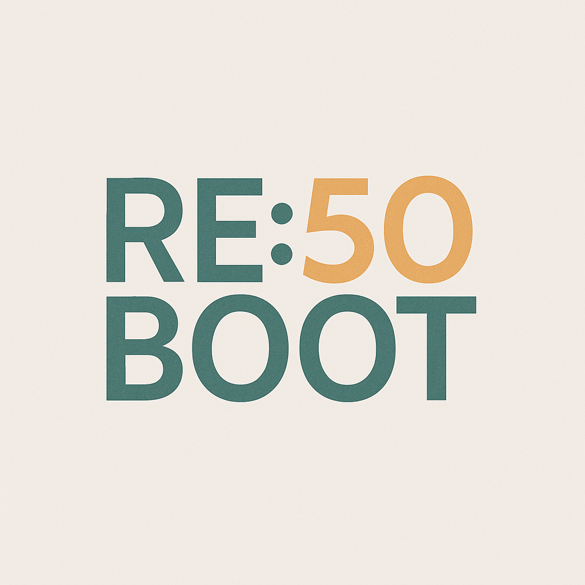

Från stillastående till nystart
Du har byggt, drivit, löst problem – men plötsligt verkar världen ha glömt vad du kan.
Reboot 50 handlar om att väcka nyfikenheten igen och använda AI som turbo på erfarenheten.

Sverige står inför en paradox.
Vi har aldrig haft så mycket erfarenhet i arbetskraften – och aldrig så många som står utanför.
Generation Reboot ger 50+ en ny brygga in i framtiden: där erfarenhet och teknik möts,
och AI blir en förlängning av det du redan kan.
Programmet bygger på fyra veckor med stigande tempo och självförtroende:
Vi söker samarbeten med företag, stiftelser och individer som vill bidra till framtidens arbetsliv.
Kontakta oss för att delta, samarbeta eller stödja initiativet Generation Reboot.